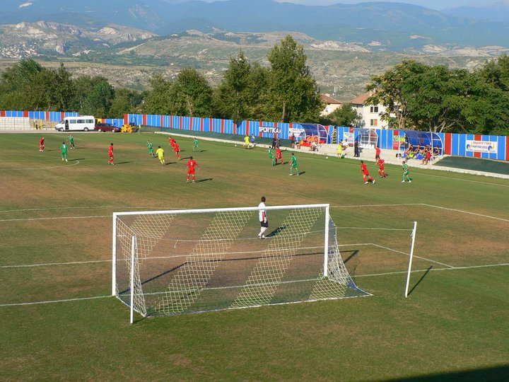
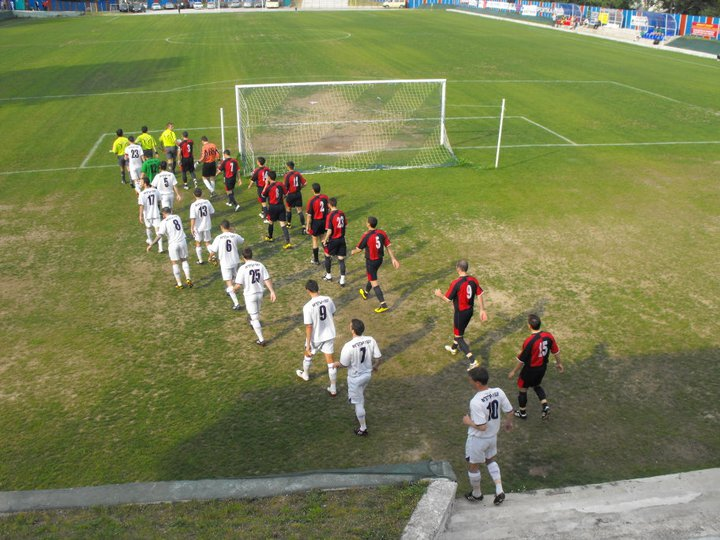
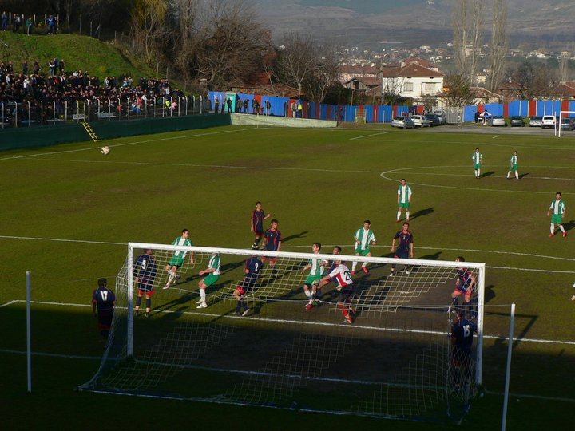
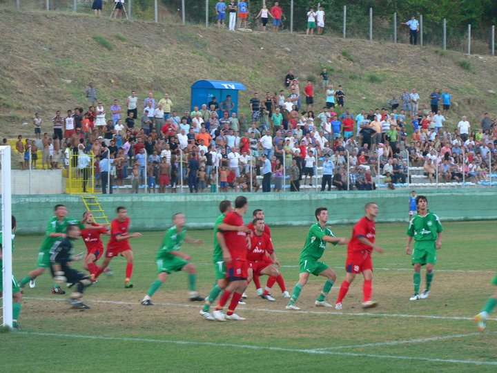
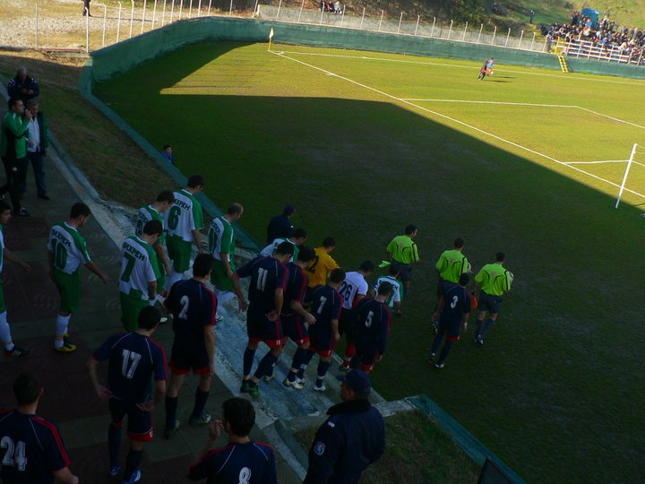
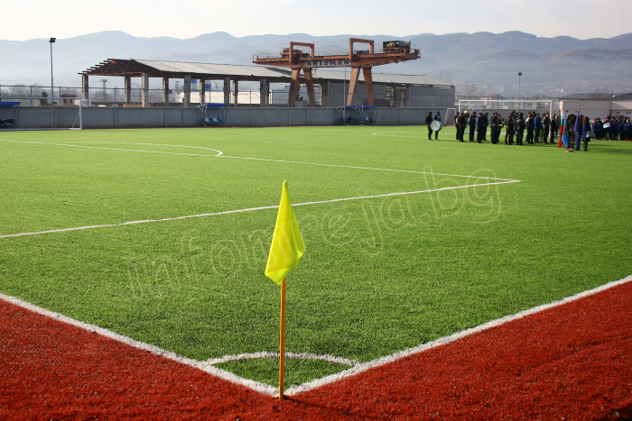
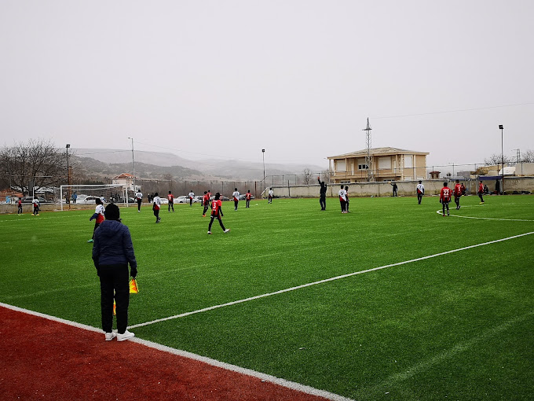
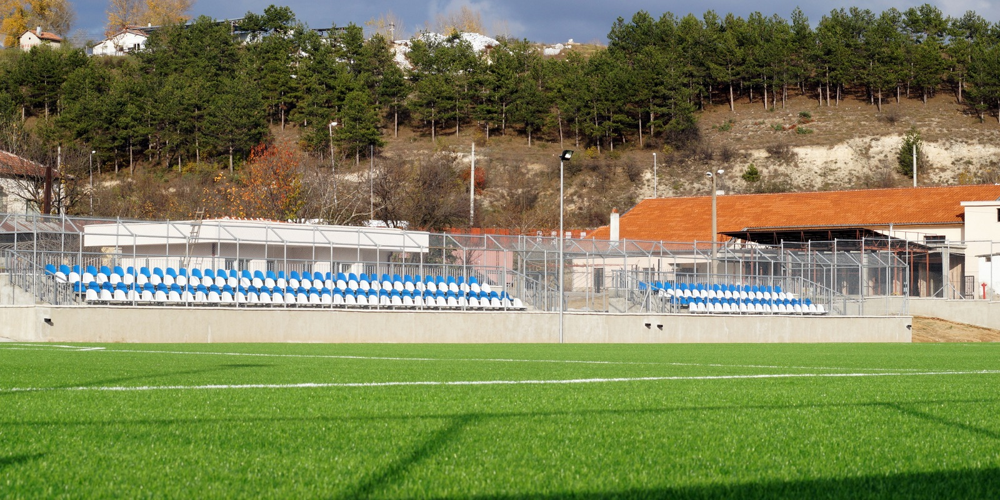

Стадиони на Малеш
Стадион в Микрево
Основният стадион на Малеш, разположен в село Микрево. Стадионът има капацитет от 3000 зрители.






Стадион в Струмяни
Вторият стадион, използван за тренировки и младежки мачове. Той разполага с по-малък капацитет, но предлага модерни условия.


